| Home | All Classes | Main Classes | Annotated | Grouped Classes | Functions |
[Prev: Preface] [Home] [Next: Creating a Main Window Application]
This chapter provides a quick start for users of Qt Designer. The chapter takes you step-by-step through the creation of a small dialog-style metric conversion application. It introduces many of the common tasks users perform when creating an application: adding widgets to a form, setting widget properties, making connections between signals and slots, laying out widgets, and adding custom code. This chapter only covers a portion of Qt Designer's functionality; explanations and details are mostly left for the more detailed colortool tutorial presented in chapters two and three.
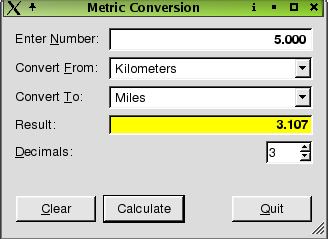
The Metric Conversion Dialog
To start Qt Designer under Windows, click the Start button then select Programs|Qt X.x.x|Designer. (X.x.x is the Qt version number, e.g. 3.3.1.)
Qt Designer may be started in a number of ways, depending on the desktop environment you are using:
If there is a Qt Designer icon on the desktop background, you may double click this to start Qt Designer.
For desktop environments which feature a Start menu, there may be a Qt Designer item in the relevant submenu; try looking for a Qt Designer entry in the "Programming" or "Development" submenus, and select this.
Entering designer in a terminal window will also start Qt Designer.
Double click on Qt Designer in the Finder.
When you have finished using Qt Designer, just click File|Exit. If you have unsaved work, Qt Designer will ask you whether you wish to save or discard any changes.
Start Qt Designer now. When Qt Designer starts, it shows the New/Open dialog. We will open this dialog ourselves, so click Cancel to close it.
Our metric conversion application is a standard C++ application, so we must create a C++ project, and add our files and code to this project.
Create the new project as follows:
Click File|New to invoke the New File dialog.
Click "C++ Project" to create a C++ project then click OK to pop up the Project Settings dialog.
Click the ellipsis (...) button next to the Project File line edit to invoke the Save As dialog. Use this dialog to navigate to where you want to create the new project, creating a new folder for it (called "metric") using the Create New Folder toolbar button.
Enter a filename of "metric.pro" then click Save; the project's name will now be "metric".
Click OK to close the Project Settings dialog.
Click File|Save to save the project.
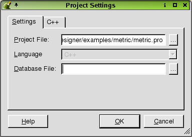
See also Creating the Project.
Click File|New to invoke the New File dialog.
Click "Dialog" then click OK.
Drag a corner of the new form to make it a lot smaller.
Change the form's name (in the Property Editor) to "ConversionForm", and change its caption to "Metric Conversion".
Click File|Save, accept the default form name, and click Save to save it.
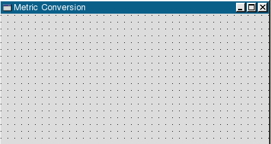
See also Creating Dialogs and Layouts.
Click the Common Widgets button listed in the Toolbox toolbar at the left of Qt Designer's main window.
Double click the TextLabel button then click inside the dialog near the top left corner.
Click four more times below the top text label until you have five labels from top to bottom. Don't worry about exact placement of the labels since the layout tools will handle this automatically.
Click the Pointer toolbar button to deselect the text label.
See also Adding the Widgets.
We will change the properties of the text labels to suit the application. This will make them easier to refer to later.
Click on the text label that is closest to the top of the dialog. Go to the Property Editor window, and change the label's text property to "Enter &Number:". The & (ampersand) makes the following letter an Alt key accelerator (keyboard shortcuts).
Click the second label. Change the label's text property to "Convert &From:".
Click the third label. Change the label's text property to "Convert &To:".
Click the fourth label. Change the label's text property to "Result:".
Click the fifth label. Change the label's text property to "&Decimals:".
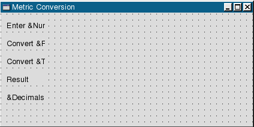
See also Using the Property Editor.
Click the Common Widgets button listed in the Toolbox toolbar at the left of Qt Designer's main window.
Click the LineEdit button and then click to the right of the Enter Number label. Change its name property to "numberLineEdit". Change the hAlign property to AlignRight and change vAlign to AlignTop. Change the font property to use a bold variant by expanding it and adjusting the value in its bold subsection. Finally, change wordwrap to False. Note that whenever you click a widget, its properties appear in the Property Editor.
Double click the ComboBox button, and click to the right of the Convert From label. Now click to the right of the "Convert To" label. Click the Pointer toolbar button to deselect the ComboBox. Change the name property of the first combobox to "fromComboBox". Change the name property of the second to "toComboBox".
Click the LineEdit button then click to the right of the "Result" label. Change its name property to "resultLineEdit". Change the paletteBackgroundColor property to a shade of yellow and modify the font property to use a bold variant (just to make the result stand out). Change hAlign to AlignRight, vAlign to AlignVCenter, and wordwrap to False. Now change the readOnly property to "True".
Click the SpinBox button then click to the right of the Decimals label. Place the SpinBox below the right side of the resultLineEdit. Change the spinbox's name property to "decimalsSpinBox". Change its max value property to "6", and the value to "3".
Click File|Save.
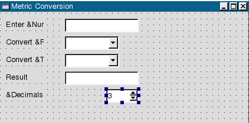
Now we need to relate each of the text labels to the corresponding widget. We do this by creating "buddies".
A widget that does not accept focus itself, e.g. a QLabel, can have an accelerator that will pass the focus to its "buddy", e.g. a QLineEdit. In Qt Designer, we enable this by setting the first widget's buddy property to the name of the buddy widget.
Click the Set Buddy toolbar button (or press F12). Click the Enter Number label, drag the line to the numberLineEdit, then release.
Click the Set Buddy toolbar button. Click the Convert From label, drag the line to the fromComboBox, then release.
Click the Set Buddy toolbar button. Click the Convert To label, drag the line to the toComboBox, then release.
Click the Set Buddy toolbar button. Click the Decimals label, drag the line to the decimalsSpinBox, then release.
Click the Common Widgets button in the Toolbox.
Double click the Pushbutton button then click inside the dialog near the bottom left corner, just below the "Decimals" label.
Click twice more to the right of the new push button, so that you have three push buttons in a horizontal row at the bottom of the dialog.
Click the Pointer toolbar button to deselect the push button.
We will change a few properties for each of the push buttons in the Property Editor window.
Click the left-most push button, and change its name to "clearPushButton", and its text to "&Clear".
Click the middle push button and change its name to "calculatePushButton", its text to "Calculate", and its default property to "True".
Click the right-most push button, change its name to "quitPushButton", and change its text to "&Quit".
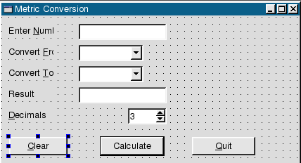
We need to add spacers to absorb redundant space in our dialog, so that it will lay out nicely at any size. Usually spacers are added as you experiment with the layout but, since this is a quick guide to Qt Designer, and we already know that they will be needed, we will add the spacers now.
Click the Common Widgets button in the Toolbox.
Click the Spacer button. Click to the right of the "Decimal" label, drag right towards the spinbox, then release. A horizontal spacer will appear.
Click the Spacer button again. Click to the right of the Calculate push button, drag right towards the Quit push button, then release.
Click the Spacer button. Click just below the spin box, drag vertically towards the buttons, then release. This time, a vertical spacer will appear.
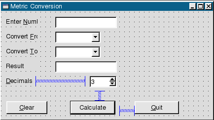
Click File|Save to save the dialog.
We will edit some of the widgets to contain the values needed for the conversions.
The fromComboBox:
Right click the fromComboBox then click Edit from the context menu.
Click New Item, and replace the "New Item" text with "Kilometers".
Click New Item, and change the text to "Meters".
Click New Item, and change the text to "Centimeters".
Click New Item, and change the text to "Millimeters".
Click OK to close the Edit Listbox dialog.
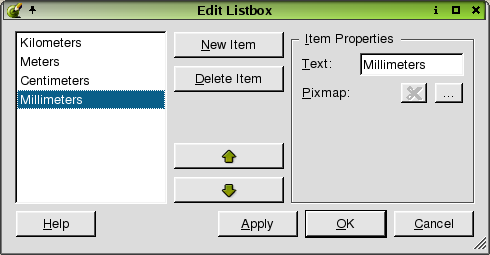
The toComboBox:
Right click the toComboBox then click Edit from the context menu.
Delete the "New Item" text, and type "Miles".
Click New Item, and change the text to "Yards".
Click New Item, and change the text to "Feet".
Click New Item, and change the text to "Inches".
Click OK to close the Edit Listbox dialog.
We will lay out the text labels with their corresponding widgets first, and lay out the push buttons last.
Click the decimalsSpinBox, and press Shift+Click on the spacer next to it.
Click the Lay Out Horizontally (Ctrl+H) toolbar button.
Click the form to deselect anything that's selected.
Click the form to the left of the Decimals text label, drag the rubber band so that all the widgets above the vertical spacer are selected, then release.
Click the Lay Out in a Grid (Ctrl+G) toolbar button.
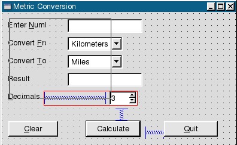
Click the Clear push button in the Object Explorer window (Objects tab) then Shift+Click the Calculate push button, the Quit push button, and the Spacer between the push buttons.
Click the Lay Out Horizontally toolbar button.
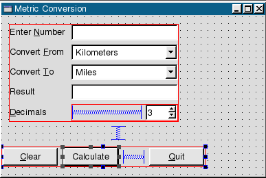
Click the form to deselect all the widgets and layouts then click the Lay Out Vertically (Ctrl+L) toolbar button.
Finally, click the form then click the Adjust Size (Ctrl+J) toolbar button.
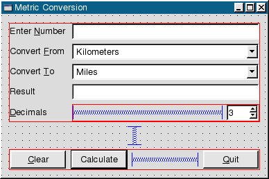
Click File|Save to save the dialog.
See also Laying Out the Widgets.
We should make sure that our dialog's tab order is set correctly.
Click the Tab Order toolbar button. A number in a blue circle will appear next to every widget that can accept the keyboard focus.
Click every widget in turn in the order you want them to accept the keyboard focus.
Press Esc to leave tab order mode.
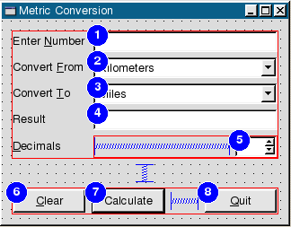
See also Changing the Tab Order.
To preview the dialog, press Ctrl+T or click Preview|Preview Form from the menubar. Try dragging the corner of the dialog to adjust the size. Note that the the widgets always stay in proportion no matter what size you make the dialog. Check the tab order of the widgets by pressing the Tab key.
We need to connect three buttons: the Clear button, the Calculate button, and the Quit button. We also need to connect some of the other widgets. For convenience, we can make all of our connections at once using the View and Edit Connections dialog.
We will now connect our clearButton:
Click Edit|Connections to invoke the View and Edit Connections dialog.
Click New to enter a new connection.
For the first connection, select clearPushButton for the Sender, clicked() for the Signal, numberLineEdit for the Receiver, and clear() for the Slot.
Click New again.
Select clearPushButton for the Sender, clicked() for the Signal, resultLineEdit for the Receiver, and clear() for the Slot.
Click New again.
Select clearPushButton for the Sender, clicked() for the Signal, numberLineEdit for the Receiver, and setFocus() for the Slot.

We also need to connect the quit button to the form:
Click New.
Select quitPushButton for Sender, clicked() for Signal, ConversionForm for Receiver, and close() for Slot.
We want to connect the calculate button and the other widgets, but the slot we want to use is not listed in the combobox. We will need to create a new slot so that we can select it from the list to complete our connections.
Click New.
Select calculatePushButton for the Sender, clicked() for the Signal, and ConversionForm for the Receiver.
Click Edit Slots to invoke the Edit Functions dialog.
Click New Function.
Type over the Function name with the name of our new function: convert().
Click OK.
Select convert() from the Slot combobox to complete our connection.

We will now connect the last few widgets:
Click New.
Select decimalsSpinBox as the Sender, valueChanged(int) as the Signal, ConversionForm as the Receiver, and convert() as the Slot.
Click New.
Select fromComboBox as the Sender, activated(int) as the Signal, ConversionForm as the Receiver, and convert() as the Slot.
Click New.
Select toComboBox as the Sender, activated(int) as the Signal, ConversionForm as the Receiver, and convert() as the Slot.
Click New.
Select calculatePushButton as the Sender, clicked() as the Signal, numberLineEdit as the Receiver, and setFocus() as the Slot.
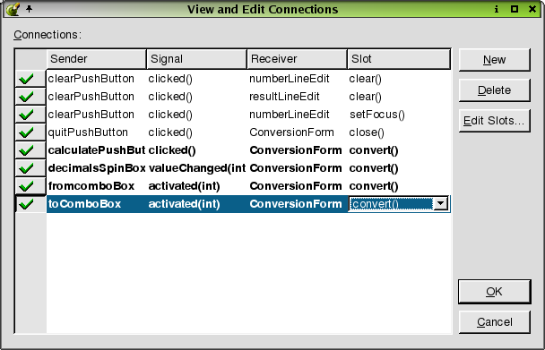
Click OK to exit the View and Edit Connections dialog.
Click Save to save the project.
Click "conversionform.ui.h" in the Project Overview window to invoke the code editor. We will implement the convert() and init() functions. For faster implementation, copy the code from this section and then follow the brief explanations below:
void ConversionForm::convert()
{
enum MetricUnits {
Kilometers,
Meters,
Centimeters,
Millimeters
};
enum OldUnits {
Miles,
Yards,
Feet,
Inches
};
// Retrieve the input
double input = numberLineEdit->text().toDouble();
double scaledInput = input;
// internally convert the input to millimeters
switch ( fromComboBox->currentItem() ) {
case Kilometers:
scaledInput *= 1000000;
break;
case Meters:
scaledInput *= 1000;
break;
case Centimeters:
scaledInput *= 10;
break;
}
//convert to inches
double result = scaledInput * 0.0393701;
switch ( toComboBox->currentItem() ) {
case Miles:
result /= 63360;
break;
case Yards:
result /= 36;
break;
case Feet:
result /= 12;
break;
}
// set the result
int decimals = decimalsSpinBox->value();
resultLineEdit->setText( QString::number( result, 'f', decimals ) );
numberLineEdit->setText( QString::number( input, 'f', decimals ) );
}
First, we define some enums for the input and output units. Then we retrieve the input from the numberLineEdit. We convert the input to millimeters because this is the most precise metric unit we support. Then we convert it to inches which is the most precise output unit we support. We then scale it to the selected output unit. Finally, we put the result in the resultLineEdit.
Next, we will implement the init() function which is called when the dialog is created.
void ConversionForm::init()
{
numberLineEdit->setValidator( new QDoubleValidator( numberLineEdit ) );
numberLineEdit->setText( "10" );
convert();
numberLineEdit->selectAll();
}
For this function, we set a validator on the numberLineEdit so that the user can only input numbers. To be able to do this, we also need to add #include <qvalidator.h> at the top of the "conversionform.ui.h" file, before the init() function. Lastly, we set the initial input.
We are almost ready to run the application. Before we compile the application, we need a main.cpp file.
Click File|New to open the New File dialog.
Click C++ Main File (main.cpp) then click OK.
Accept the default selections for the Configure Main-File dialog.
Click Save to save the project.
Compiling and Running the Application
Start or switch to a console, and navigate to the directory where the project is saved.
Run qmake on the project file (metric.pro) by typing qmake -o Makefile metric.pro.
Run make (or nmake depending on your system).
After the project has compiled, run the application.
In this brief introduction to Qt Designer, we have covered the basic tasks involved in creating a simple dialog-style application. The user should now be able to add widgets to a form, set widget properties, connect signals and slots, lay out the form, and add custom code. We have ignored many of the details, and deferred some explanations until later chapters. The next two chapters provide a tutorial that covers the development of a small but complete application, and the reference chapters complete the detailed coverage.
[Prev: Preface] [Home] [Next: Creating a Main Window Application]
| Copyright © 2007 Trolltech | Trademarks | Qt 3.3.8
|